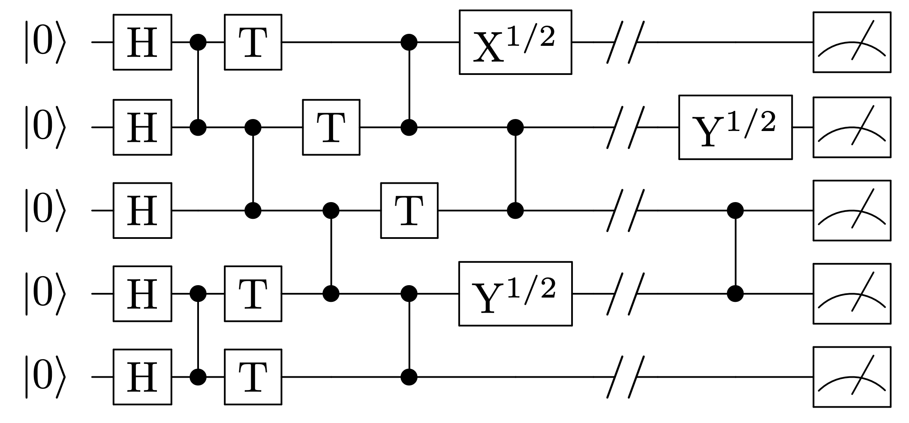

Quantum Supremacy Circuits

Introduction
Some information recently leaked that Google’s quantum computing team achieved quantum supremacy – that Google’s new 54-qubit quantum computer was successful in completing a task that would be intractable even for modern supercomputers. This notebook is dedicated to running a simplified version of the supremacy circuit that Google’s team used. It is based on the notebook from the University of Edinburgh’s quantum computing hackathon, found on GitHub
We’re going to follow the original Google proposal This supremacy circuit focuses on running pseudo-random quantum circuits, which is a natural task for a quantum computer, but can take exponential time to run on a classical computer. We’ll run a four-qubit example of this supremacy circuit.
Circuit Building
The first step in the supremacy routine is to apply Hadamard gates to all qubits.
from pyquil import Program
from pyquil.api import get_qc, WavefunctionSimulator, local_qvm
from pyquil.gates import *
import numpy as np
def hadamard_to_all(circuit, n):
for qubit in qubits:
circuit += H(qubit)
return circuit
Next we have the application of Controlled-Z operations to all qubits, where the qubits are ordered in a square. For an example of a 6 x 6 qubit grid, these CZ gates are applied in an order specified by this image:
While applying the CZ gates, we begin adding random gates from a specific set. We apply them following these rules:
- The set of gates that may be applied is
- $X^{\frac{1}{2}} = \exp\left(i\frac{\pi}{4}\sigma_x\right)$
- $Y^{\frac{1}{2}} = \exp{i\frac{\pi}{4}\sigma_y}$
- $T = \left(\begin{array}{cc}
1 & 0 \\
0 & e^{i\pi/4} \end{array} \right)$
- A gate from this set may be applied to a qubit only if a CZ gate was applied to it the previous time step.
- On each qubit, the first gate from this set to be applied must be the $T$ gate
- On each qubit, a different gate from this set must be applied than was applied to it previously
The end goal is to have a circuit of the general form shown below.

First, we need to define the $X^{\frac{1}{2}}$ and $Y^{\frac{1}{2}}$ gates.
from pyquil.quilbase import DefGate
# gate definitions for the X^(1/2) gate
sqrt_x = np.array([[ 0.5+0.5j, 0.5-0.5j],
[ 0.5-0.5j, 0.5+0.5j]])
# Get the Quil definition for the new gate
sqrt_x_definition = DefGate("SQRT_X", sqrt_x)
# Get the gate constructor
SQRT_X = sqrt_x_definition.get_constructor()
# gate definitions for the Y^(1/2) gate
sqrt_y = np.array([[ 0.5+0.5j, -0.5-0.5j],
[ 0.5+0.5j, 0.5+0.5j]])
# Get the Quil definition for the new gate
sqrt_y_definition = DefGate("SQRT_Y", sqrt_y)
# Get the gate constructor
SQRT_Y = sqrt_y_definition.get_constructor()
Now that we have defined all gates and constructed a function to apply the Hadamard to all qubits, we can make a function to apply all necessary operations. For the sake of reproducibility and brevity, we’ll apply the gates in a set order, but it is trivial to pick them from the random set instead.
def random_circuit_sampling_4(circuit, qubits):
circuit += sqrt_x_definition
circuit += sqrt_y_definition
circuit = hadamard_to_all(circuit, np.sqrt(len(qubits)))
circuit += CZ(qubits[0], qubits[1])
circuit += T(qubits[0])
circuit += T(qubits[1])
circuit += CZ(qubits[2], qubits[3])
circuit += T(qubits[2])
circuit += T(qubits[3])
# end of layer 1
#----------------------
circuit += CZ(qubits[0], qubits[2])
circuit += SQRT_Y(qubits[0])
circuit += SQRT_X(qubits[2])
circuit += CZ(qubits[1], qubits[3])
circuit += SQRT_Y(qubits[1])
circuit += SQRT_X(qubits[3])
return circuit
Now we are ready to apply the randomized gates to the circuit.
circuit = Program()
qc = get_qc("4q-qvm")
qubits = qc.qubits()
random_circuit_sampling_4(circuit, qubits)
<pyquil.quil.Program at 0xa21c78cf8>
Now that the circuit is built, let’s also make a plotting utility so that we can see the outcomes more easily.
def plot_data(probs):
x = np.arange(len(probs))
plt.bar(x, probs.values(), width=0.3, align='center')
plt.xticks(range(len(probs)), list(probs.keys()),rotation=70)
plt.xlabel("Outcomes", fontsize=20)
plt.ylabel("Coefficients", fontsize=20)
Now let’s actually find the values of the circuit. We’ll use the PyQuil WavefunctionSimulator to get the exact outputs. Recall that the exact probability of an outcome is the coefficient squared.
from pyquil.api import WavefunctionSimulator
import matplotlib.pyplot as plt
%matplotlib inline
make_wf = WavefunctionSimulator()
with local_qvm():
wf = make_wf.wavefunction(circuit)
exact_probs = wf.get_outcome_probs()
print('The exact circuit probability coeffs are: \n', exact_probs )
plot_data(exact_probs)
The exact circuit probability coeffs are:
{'0000': 0.015624999999999993, '0001': 0.0026808261758407724, '0010': 0.0026808261758407724, '0011': 0.22901334764831824, '0100': 0.09106917382415915, '0101': 0.14062499999999992, '0110': 0.015624999999999993, '0111': 0.002680826175840781, '1000': 0.09106917382415915, '1001': 0.015624999999999986, '1010': 0.14062499999999992, '1011': 0.002680826175840778, '1100': 0.05223665235168152, '1101': 0.09106917382415915, '1110': 0.09106917382415915, '1111': 0.01562499999999999}
Conclusions
It’s easy to see how this supremacy circuit is relatively easy to execute on a quantum computer, since it is a series of two- and one-qubit operations. It’s also easy to see how the size of classical computation for this circuit can quickly grow exponentially.
This contrived example has shown a case of quantum supremacy, but it is a fascinating example nonetheless. Unless we were to come up with a new clever classical algorithm to simulate a quantum circuit, this will stand as the first example of achieved quantum supremacy, provided that Google officially releases its official article outlining its quantum supremacy experiment.
)